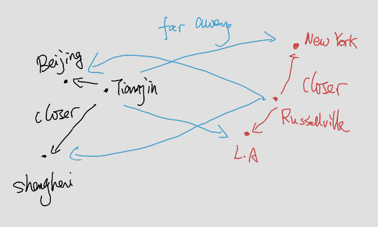

k-Nearest Neighbors algorithm (k-NN)
Contents
2.1. k-Nearest Neighbors algorithm (k-NN)#
2.1.1. Ideas#
Assume that we have a set of labeled data ${(X_i, y_i)}$ where $y_i$ denotes the label. Given a new data $X$, how do we determine the label of it?
k-NN algorithm starts from a very straightforward idea. We use the distances from the new data point $X$ to the known data points to identify the label. If $X$ is closer to $y_i$ points, then we will label $X$ as $y_i$.
You may take cities and countries as an example. New York and Los Angeles are U.S cities, and Beijing and Shanghai are Chinese cities. Since Tianjin is closer to Beijing and Shanghai comparing to New York and Los Angeles, we classify Tianjin as a Chinese city. Meanwhile, since Russellville is closer to New York and Los Angeles comparing to Beijing and Shanghai, we classify it as a U.S. city.

This naive example explains the idea of k-NN. Here is a more detailed description of the algorithm.
2.1.2. The Algorithm#
We are given the training data set ${(X_i, y_i)}$ where $X_i=(x_i^1,x_i^2,\ldots,x_i^n)$ represents $n$ features and $y_i$ represents labels. Let $\tilde{X}=(\tilde{x}^1,\tilde{x}^2,\ldots,\tilde{x}^n)$ be the new data point. We want to find the best label for $\tilde{X}$.
Compute the distance from $\tilde{X}$ to each $X_i$.
Sort all these distances from the nearest to the furthest.
Find the nearest $k$ data points.
Determine the labels for each of these $k$ nearest points, and compute the frenqucy of each labels.
The most frequent label is considered to be the label of $\tilde{X}$.
2.1.3. Details#
The distance between two data points are defined by the Euclidean distance:
Using linear algebra notations:
All the distances are stored in a $1$-dim numpy array, and we will combine it together with another $1$-dim array that store the labels of each point.
2.1.4. The codes#
argsortgetsorted
def classify_kNN(inX, X, y, k):
# create a new 2-d numpy array by copying inX for each row.
Xmat = np.tile(np.array([inX]), (X.shape[0], 1))
# compute the distance between each row of X and Xmat
Dmat = np.sqrt(np.sum((Xmat - X)**2, axis=1))
# sort by distance
sortedlist = Dmat.argsort()
# count the freq. of the first k items
k = min(k, len(sortedlist))
classCount = dict()
for i in sortedlist[:k]:
classCount[y[i]] = classCount.get(y[i], 0) + 1
# find out the most freqent one
sortedCount = sorted(classCount.items(), key=lambda x:x[1],
reverse=True)
return sortedCount[0][0]
2.1.5. sklearn packages#
You may also directly use the kNN function KNeighborsClassifier packaged in sklearn.neighbors. You may check the description of the function online from here.
There are many ways to modify the kNN algorithm. What we just mentioned is the simplest idea. It is correspondent to the argument weights='distance'.
from sklearn.neighbors import KNeighborsClassifier
neigh = KNeighborsClassifier(n_neighbors=10, weights='distance')
neigh.fit(X_train_norm, y_train)
y_pred = neigh.predict(X_test_norm)
2.1.6. Normalization#
Different features may have different scales. It might be unfair for those features that have small scales. Therefore usually it is better to rescale all the features to make them have similar scales.
def encodeNorm(X, parameters=None):
# parameters contains minVals and ranges
if parameters is None:
minVals = np.min(X, axis=0)
maxVals = np.max(X, axis=0)
ranges = maxVals - minVals
parameters = {'ranges': ranges, 'minVals': minVals}
else:
minVals = parameters['minVals']
ranges = parameters['ranges']
Nmat = np.tile(minVals, (X.shape[0], 1))
Xnorm = (X - Nmat)/ranges
return (Xnorm, parameters)
def decodeNorm(X, parameters):
# parameters contains minVals and ranges
ranges = parameters['ranges']
minVals = parameters['minVals']
Nmat = np.tile(minVals, (X.shape[0], 1))
Xoriginal = X * ranges + Nmat
return Xoriginal